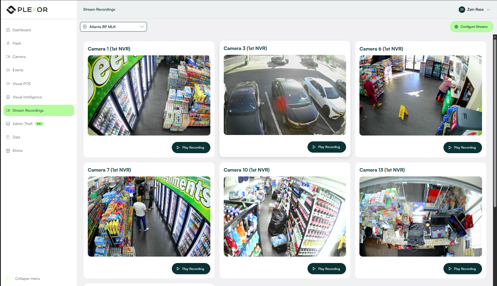
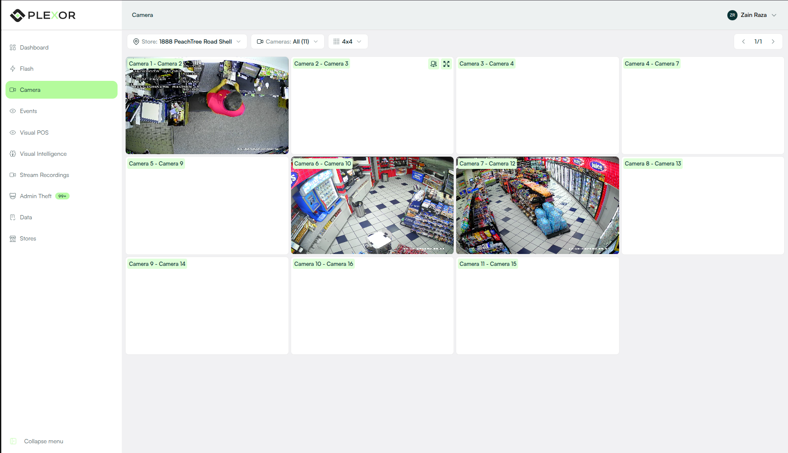
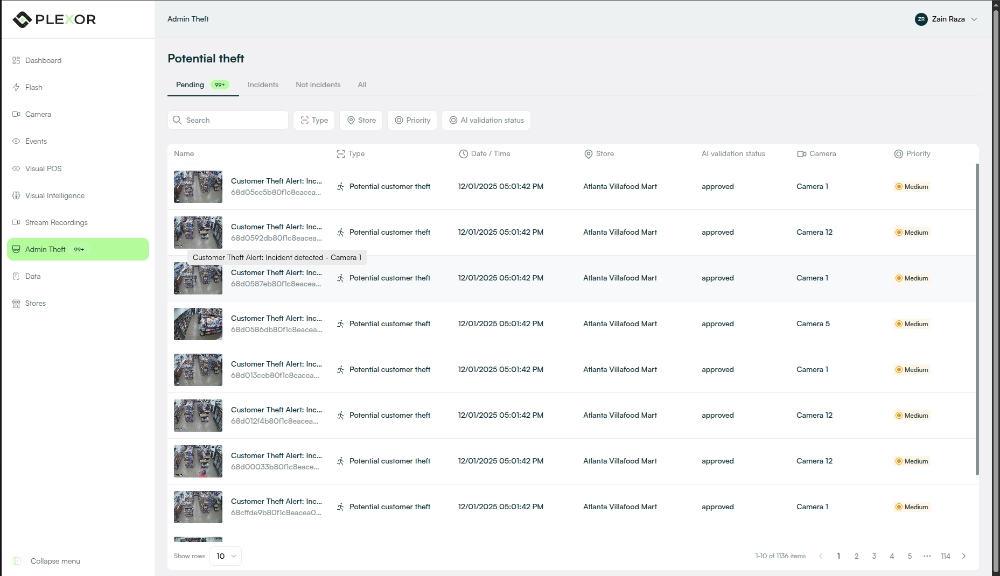
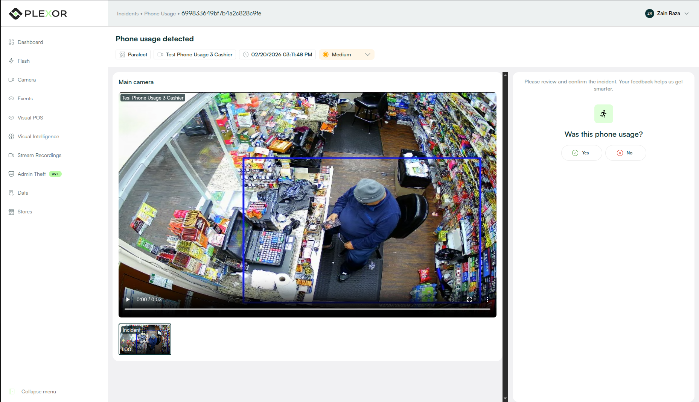
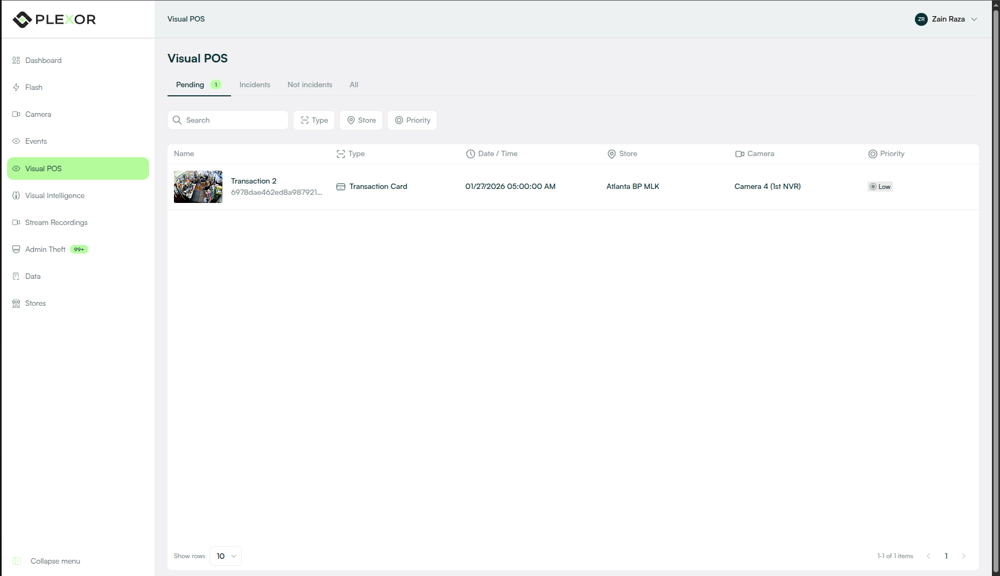
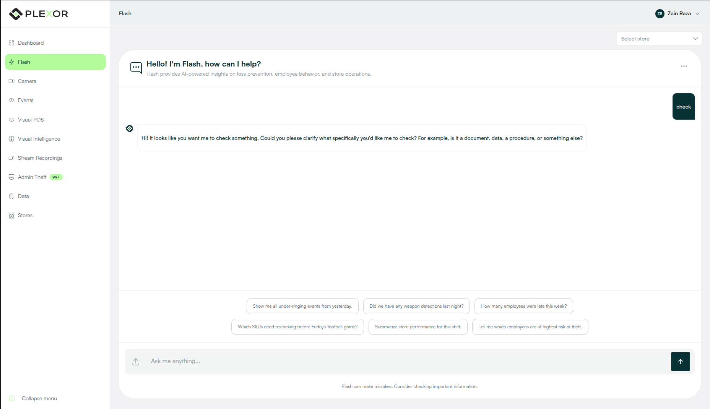

05 / AI Surveillance — Case Study


AI-Based Surveillance System
Computer-vision loss prevention for retail — theft, POS fraud and loitering, flagged in real time and routed to the managers who can act on it.
Computer-vision loss prevention for retail — theft, POS fraud and loitering, flagged in real time and routed to the managers who can act on it.
Retail shrinkage from employee & customer theft and POS under-ringing is hard to catch live. Plexor is a multi-camera computer-vision platform that detects it in real time and routes prioritised alerts to store and district managers.






Surfaced theft and POS under-ringing events in real time across monitored stores, routing prioritised alerts to the managers who could act on them.